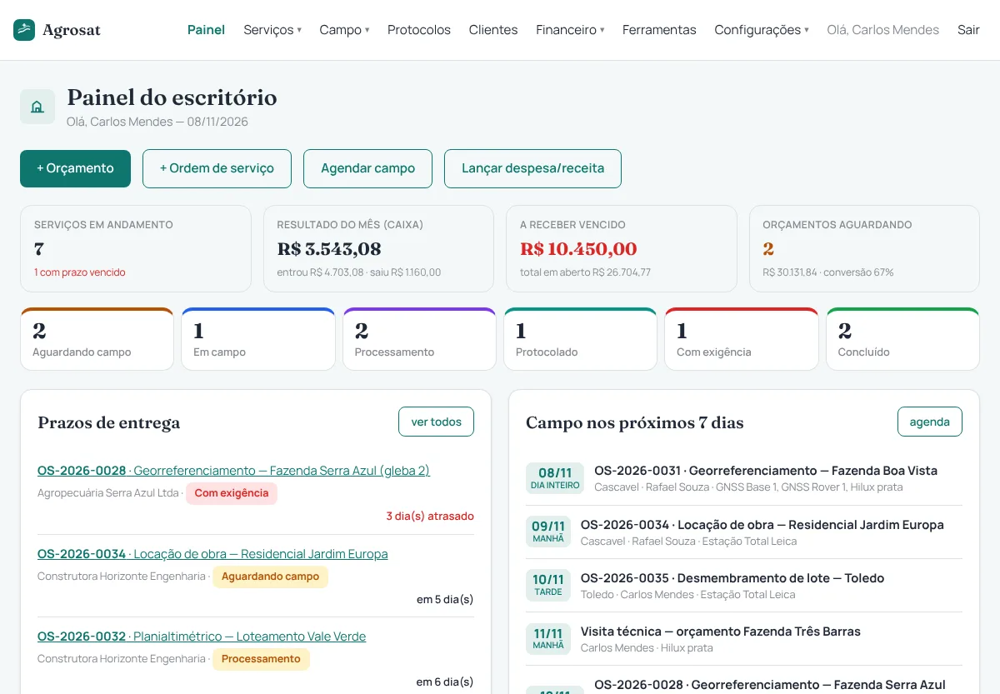
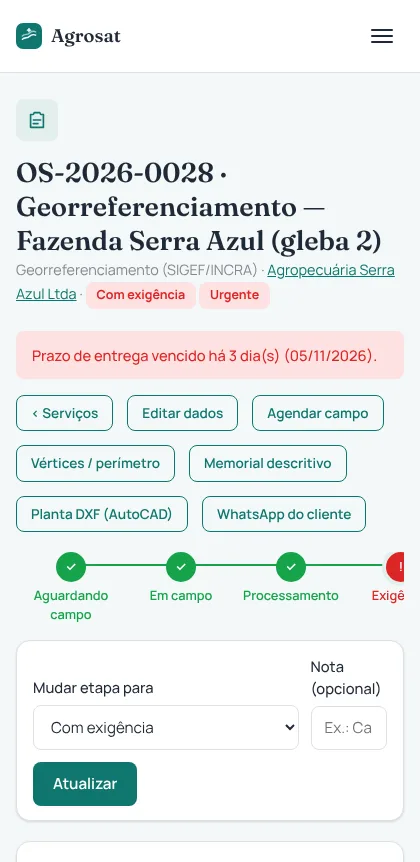
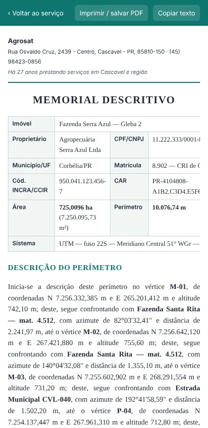
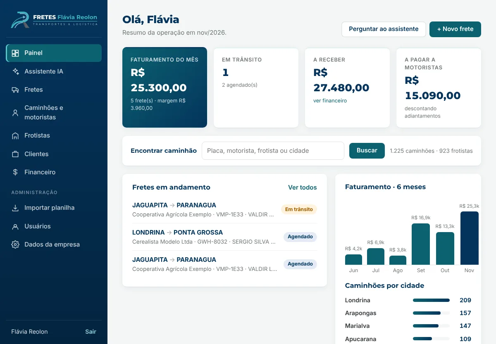
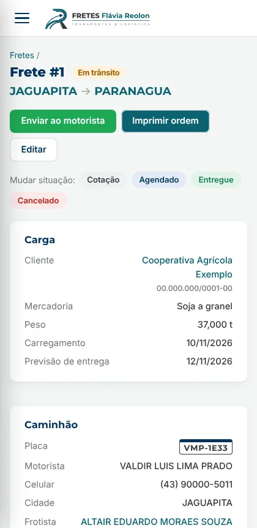
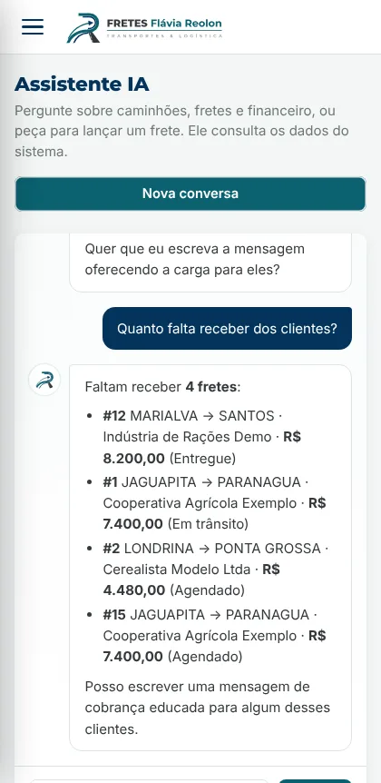

Faço sistemas completos para comércios locais: loja online, caixa, fiado e pagamento por Pix, tudo no mesmo lugar e com a cara do seu negócio. Para quem presta serviço, tem agendamento online, ordens de serviço e financeiro no mesmo painel.
Feito em Cascavel, PR. Sete projetos com prévia para você abrir e testar.
GIMFREIRES.TECH
Sistema para comércio Cascavel - PR
1x Loja onlineOK
1x Caixa (PDV)OK
1x Fiado + cobrança PixOK
1x Mercado PagoOK
1x Avisos no WhatsAppOK
1x Nota fiscalOK
1x App no celularOK
1x Agenda onlineOK
TOTAL1 sistema só
PRONTO PRA VENDER
Projetos
Sete projetos feitos para negócios do Paraná. Escolha o ramo mais parecido com o seu e veja as telas reais. Cada um tem uma prévia navegável: abra, clique nos botões e veja como o cliente e a equipe usam no dia a dia.
Conveniência e tabacaria
Clube da Cerveja
Conveniência, tabacaria e carne assada aos domingos, em Cascavel. O cliente escolhe as bebidas, encomenda a carne do domingo e paga por Pix pelo celular. No balcão, o mesmo sistema vira o caixa.
A loja no computadorNo celularPágina de produto
Tudo foi adaptado ao ramo: categorias de bebidas, aviso de venda só para maiores de 18 anos e destaque automático para o churrasco aos domingos.
Loja de eletrônicos, som automotivo e eletrodomésticos em Cascavel. A vitrine mostra o preço no Pix e em 10x, produtos sob encomenda com prazo, e o painel cuida do caixa, do estoque, dos relatórios e do crediário dos clientes.
A loja no computadorNo celularPágina de produto
Adaptado ao ramo: categorias como som automotivo, alarmes e baterias, filtro de achadinhos até R$ 100, entrada de estoque pela nota do fornecedor e linha de crédito por cliente.
Oficina mecânica em Cascavel. Cada carro entra com uma ordem de serviço, o cliente recebe o orçamento no WhatsApp e aprova pelo celular, e a OS vai direto para o caixa na hora de cobrar, baixando as peças do estoque.
As ordens de serviço no computadorO orçamento no celular do clienteA OS no celular da equipe
Adaptado ao ramo: carro cadastrado pela placa (antiga ou Mercosul), etapas da OS do orçamento à entrega, link de acompanhamento para o cliente, OS impressa e loja de peças com a marca da oficina.
Massagem sensorial em Cascavel, com atendimento para homens, mulheres e casais. O cliente escolhe a experiência, vê o valor e reserva o horário pelo site, sem precisar chamar no direct. No painel, a Kelly acompanha a agenda, os clientes fiéis, o caixa e o faturamento do mês.
O site no computadorAs experiências no celularO agendamento no celular
Adaptado ao ramo: a identidade vinho e dourado do Instagram dela, cardápio de experiências com preço e duração, aviso de atendimento só para maiores de 18 anos, bloqueio de horários e clube de clientes fiéis. Junto vai uma apresentação em slides para mostrar o projeto.
Barbearia em Santa Felicidade, Cascavel. O cliente vê os serviços com preço e duração e marca o horário pelo site, que respeita a pausa do almoço e o domingo fechado. No painel, a barbearia acompanha a agenda do dia, o clube de assinantes, a venda de produtos e o faturamento.
O site no computadorOs serviços no celularO agendamento no celular
Adaptado ao ramo: identidade preto e prata da logo, horário de segunda a sábado com pausa do almoço, reagendamento pelo próprio cliente, Clube Broetto para assinantes e confirmação pronta no WhatsApp. Junto vai uma apresentação em slides para mostrar o projeto.
Escritório de topografia no Centro de Cascavel, há 27 anos atendendo a cidade e a região. O orçamento vira ordem de serviço com um clique, a equipe de campo e os equipamentos ficam na agenda, e as coordenadas do levantamento viram área, croqui, memorial descritivo e planta pronta para abrir no AutoCAD.

O painel do escritório

A OS no celular

O memorial descritivo
Adaptado ao ramo: orçamento com diárias, deslocamento e equipamentos, etapas da OS até o protocolo no SIGEF, coordenadas UTM no fuso 22S com conversão para latitude e longitude, planta DXF, pontos para o Civil 3D e KML para o Google Earth.
Transportadora que agencia cargas com a frota da região de Jaguapitã. A planilha com 1.225 caminhões e 923 frotistas virou um cadastro com busca e WhatsApp com um toque, cada frete tem a ordem de carregamento pronta para o motorista, e um assistente de inteligência artificial responde perguntas e lança fretes a partir de uma conversa.

O painel da operação

A ordem de carregamento no celular

O assistente de IA
Adaptado ao ramo: fretes da cotação à entrega, margem e saldo do motorista calculados na hora, adiantamentos, contas a receber dos clientes e a pagar aos motoristas, importação da planilha da região e logo nova nas cores da marca.
Um painel só para cuidar da loja online e do balcão. Você cadastra o produto uma vez e o estoque vale para os dois. Para quem presta serviço, entram a agenda e as ordens de serviço.
Loja online
Catálogo com fotos, carrinho, favoritos e área do cliente com o histórico de pedidos.
Caixa para o balcão
Abertura e fechamento de caixa, busca de produtos e comprovante para o cliente.
Pix e cartão
Pagamentos pelo Mercado Pago, inclusive na maquininha Point, com confirmação automática.
Fiado sob controle
Limite de crédito por cliente, lista de quem deve e cobrança com link de Pix.
WhatsApp
Código de confirmação no cadastro, avisos de pedido e botão para o cliente compartilhar produtos.
Entrega e frete
Cálculo de frete na hora da compra e etiqueta de envio pelo próprio painel.
Nota fiscal
Emissão e cancelamento de nota pelo painel, sem precisar de outro programa.
App no celular
O cliente instala a loja na tela inicial do celular, como um aplicativo.
Agendamento online
Para barbearia, estética e terapias: o cliente marca o horário pelo site e ele aparece na agenda do painel.
Ordens de serviço
Para oficinas e prestadores de serviço: orçamento que o cliente aprova pelo celular, etapas do serviço e cobrança direto no caixa.
Relatórios e contas
Faturamento por período, por serviço e por forma de pagamento, com as contas a pagar no mesmo lugar.
Adapto para o seu ramo
O sistema já rodou como brechó e já foi adaptado para conveniência, loja de eletrônicos, oficina mecânica, barbearia, massagem terapêutica, topografia e transportadora. Nome, cores, logo, categorias e textos mudam para combinar com o seu negócio.
Conveniência e bebidas
Eletrônicos e som
Oficina mecânica
Empório e mercearia
Açougue e churrasco
Brechó e moda
Lanchonete e delivery
Pet shop
Barbearia e salão
Estética e terapias
Topografia
Transportes e fretes
Seu ramo não está na lista? Me chama e a gente vê o que precisa mudar.
Como funciona
Do primeiro contato até o sistema funcionando no seu negócio.
Conversa
Você me conta como funciona o seu negócio hoje e o que quer resolver ou vender pela internet.
Adaptação
Ajusto o sistema com a sua marca, categorias e formas de pagamento, e mostro uma prévia.
No ar
Publico no seu endereço, conecto o Mercado Pago e faço uma compra de teste.
Treinamento
Mostro como cadastrar produtos, abrir o caixa e acompanhar os pedidos.
Quem faz
Gilson Freires da Silva Reolon. Desenvolvo em Cascavel, PR, sistemas para comércios e prestadores de serviço, cada um adaptado ao jeito de trabalhar do negócio.
Você fala direto comigo pelo WhatsApp.
Dúvidas frequentes
O que mais me perguntam antes de começar.
Posso ver o sistema antes de fechar?
Pode. As prévias desta página são navegáveis: é só abrir e clicar. E, antes de colocar no ar, eu mostro uma prévia já com a sua marca.
Meu ramo não está na lista. Dá para adaptar?
Na maioria das vezes, sim. Nome, cores, logo, categorias e textos mudam de um negócio para o outro. Me conta como você trabalha hoje e eu digo o que precisa mudar.
Funciona no celular?
Funciona. O seu cliente compra ou agenda pelo celular, e você acompanha o painel pelo celular ou pelo computador. A loja também pode ser instalada na tela inicial, como um aplicativo.
Como eu recebo os pagamentos?
Por Pix e cartão, pelo Mercado Pago, inclusive na maquininha Point. A confirmação do pagamento é automática.
Preciso entender de computador para usar?
Não. Depois de colocar no ar, eu mostro como cadastrar produtos, abrir o caixa e acompanhar os pedidos.
Quanto custa?
O valor da implantação varia de um sistema para o outro, porque depende do que o seu negócio precisa. Depois da primeira conversa, eu respondo com uma proposta. O suporte mensal fica entre R$ 200 e R$ 450, conforme o sistema.
E se eu precisar de ajuda depois?
Tem suporte mensal, de R$ 200 a R$ 450 por mês, conforme o sistema. Você fala direto comigo pelo WhatsApp.
Vamos colocar seu negócio no ar?
Me manda uma mensagem contando qual é o seu negócio. Respondo com uma proposta.